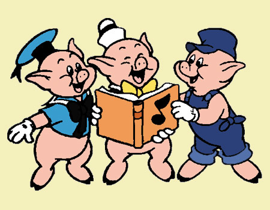

Había una vez 3 cerditos que eran hermanos y vivían en lo más profundo del bosque. Siempre habían vivido felices y sin preocupaciones en aquel lugar, pero ahora se encontraban temerosos de un lobo que merodeaba la zona. Fue así como decidieron que lo mejor era construir cada uno su propia casa, que les serviría de refugio si el lobo los atacaba.
El primer cerdito era el más perezoso de los hermanos, por lo que decidió hacer una sencilla casita de paja, que terminó en muy poco tiempo. Luego del trabajo se puso a recolectar manzanas y a molestar a sus hermanos que aún estaban en plena faena.
El segundo cerdito decidió que su casa iba a ser de madera, era más fuerte que la de su hermano pero tampoco tardó mucho tiempo en construirla. Al acabar se le unió a su hermano en la celebración.
El tercer cerdito que era el más trabajador, decidió que lo mejor era construir una casa de ladrillos. Le tomaría casi un día terminarla, pero estaría más protegido del lobo. Incluso pensó en hacer una chimenea para asar las mazorcas de maíz que tanto le gustaban.